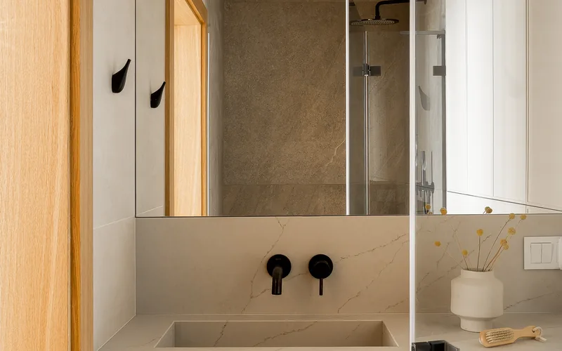
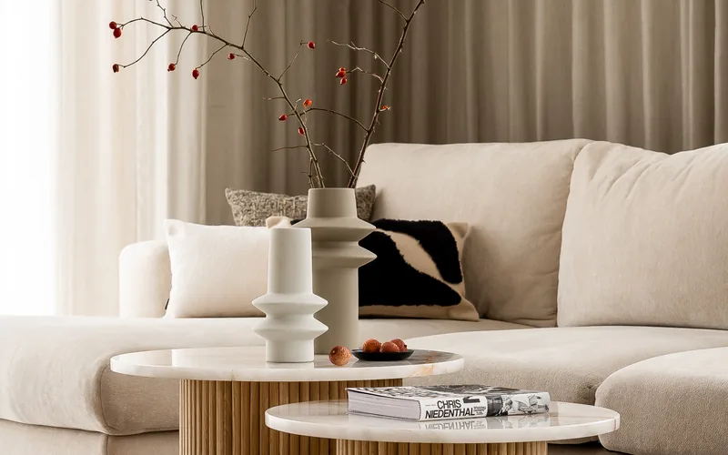
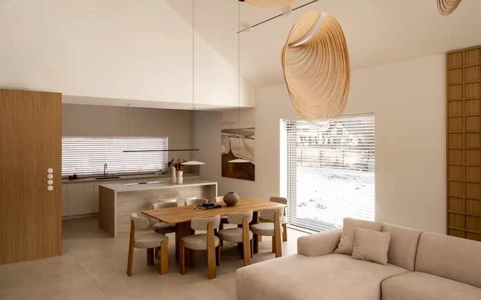

Nasza oferta
Eleganckie dopełnienie kuchni — zlewy z kamienia naturalnego i sztucznego

Kamienny zlew to doskonałe połączenie funkcjonalności z luksusowym wykończeniem kuchni. W naszej ofercie znajdziesz zlewy z kamienia naturalnego (granitu), silgranitu, fragranitu, kompozytu kwarcowego i kwarcogranitu, a także modele stalowe i ceramiczne.
Mimo solidnej konstrukcji, zlewy kamienne wyróżniają się niezrównaną trwałością i wartością estetyczną. Przy ich produkcji stawiamy na najwyższą jakość, ergonomię i ponadczasowy design. Zlew kamienny jest odporny na codzienne użytkowanie — zarysowania, uderzenia, kontakt z gorącymi naczyniami i agresywnymi środkami czyszczącymi nie stanowią dla niego zagrożenia.

Wybór odpowiedniego typu zlewu kamiennego ma kluczowe znaczenie dla funkcjonalności i estetyki kuchni. W naszej ofercie dostępne są zlewy jednokomorowe — idealne do mniejszych kuchni i minimalistycznych aranżacji, zapewniające dużą przestrzeń roboczą w jednej, głębokiej komorze.
Pod względem sposobu montażu oferujemy trzy popularne rozwiązania. Zlewy wpuszczane (undermount) montowane są od spodu blatu kuchennego, dzięki czemu krawędź zlewu pozostaje niewidoczna — efektem jest gładka, spójna powierzchnia, która ułatwia utrzymanie czystości i nadaje kuchni nowoczesny charakter.
Kamienny zlew to nie tylko element użytkowy — to wyraz dbałości o każdy detal Twojej kuchni.
Rodzaje materiałów

Zlew granitowy to synonim wytrzymałości i ponadczasowej elegancji. Granit jest jednym z najtwardszych kamieni naturalnych — jego powierzchnia jest ekstremalnie odporna na zarysowania, nawet przy codziennym kontakcie z ostrymi narzędziami kuchennymi. Zlewy z granitu doskonale znoszą kontakt z gorącymi garnkami i patelniami — wysoka temperatura nie powoduje żadnych uszkodzeń powierzchni.
Silgranit to opatentowany materiał firmy Blanco, składający się w 80% z naturalnego granitu połączonego z żywicą akrylową. Dzięki tak wysokiej zawartości kamienia, zlewy silgranitowe wyróżniają się niezwykłą twardością i odpornością na zarysowania, jednocześnie oferując idealnie gładką, jednorodną powierzchnię.
Fragranit to zaawansowany materiał kompozytowy opracowany przez firmę Franke, łączący drobinki granitu z żywicą polimerową. Zlewy z fragranitu charakteryzują się wyjątkową odpornością na promieniowanie UV — nie blakną pod wpływem słońca, zachowując intensywność koloru przez cały okres użytkowania.
Kwarcogranit to kompozyt łączący kruszywo kwarcowe z żywicą akrylową, tworzący materiał o wyjątkowych parametrach użytkowych. Zlewy kwarcogranitowe odznaczają się doskonałą odpornością termiczną — wytrzymują kontakt z naczyniami o temperaturze do 280°C bez ryzyka uszkodzenia.
Kompozyt kwarcowy to nowoczesny materiał na bazie naturalnego kwarcu, oferujący niemal nieograniczone możliwości kolorystyczne. Zlewy z kompozytu kwarcowego dostępne są w dziesiątkach odcieni — od klasycznych tonów kamiennych, przez ciepłe beże i szarości, aż po nowoczesne antracyty i głębokie czarne barwy.

Sposób połączenia zlewu z blatem kuchennym ma ogromny wpływ na estetykę i funkcjonalność całej strefy roboczej. Montaż pod blatem (undermount) to jedno z najpopularniejszych rozwiązań w nowoczesnych kuchniach — zlew mocowany jest od spodu blatu, dzięki czemu krawędź otworu jest zakryta przez kamienną powierzchnię.
Montaż nakładany (top-mount) to klasyczne rozwiązanie, w którym zlew osadzony jest w wyciętym otworze blatu z widocznym rantem nakładającym się na powierzchnię kamienia. Ten typ montażu jest uniwersalny i sprawdza się z niemal każdym rodzajem blatu — granitowym, kwarcogranitowym czy ze spieku kwarcowego.
Od projektu przez realizację — zlewy kamienne łączące elegancję z funkcjonalnością.
Dlaczego warto
Zapraszamy do współpracy
Skontaktuj się z nami — doradzimy najlepsze rozwiązanie dla Twojego projektu. Oferujemy bezpłatną wycenę i profesjonalne doradztwo.
Skontaktuj się